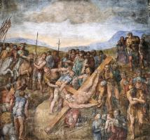

Christian Art: Русский
Старый Завет

Адам и Єва (4)

Давид (3)

Моисей (1)

Ной (3)

Пророки (23)

Сотворение мира (5)

Сюжети Старого Завета (4)
Новый Завет

Апостол Павел (3)

Апостол Петр (6)
Апостол Петр (6)

Бог Отец (1)

Иоанн Креститель (7)

Пятидесятница (4)

Страшный суд (5)
Сюжеты Нового Завета (7)
Богородица

Бегство в Египет (8)

Благовещение (13)

Богородица и Дитя (58)

Коронация Богородицы (5)

Портрет Богородицы (1)

Родители Богородицы (7)

Сцены из жизни Богородицы (11)

Успение (11)
Иисус Христос

Вознесение (3)

Воскресение (15)

Вход Господний в Иерусалим (2)

Крещение Господне (1)

Муж скорбей (2)

Оплакивание Христа (13)

Поклонение Дитю (10)

Портрет Иисуса (10)

Преображение (2)

Притчи Иисуса (3)

Распятие (24)

Рождество (4)

Служение Иисуса (17)

Страсти Христовы (22)

Стретение (6)

Тайная вечеря (5)
Христианство

Ад (2)

Ангелы (10)

Добродетели (8)

Пороки (8)

Рай (1)

Святой Франциск (43)

Святые (87)

Церковь (2)
Художники
А

Ангел Акотантос (16)

Фра Беато Анджелико (145)
Д

Джотто (162)
Дуччо (80)
М
Микеланджело (36)
Р

Андрей Рицос (9)